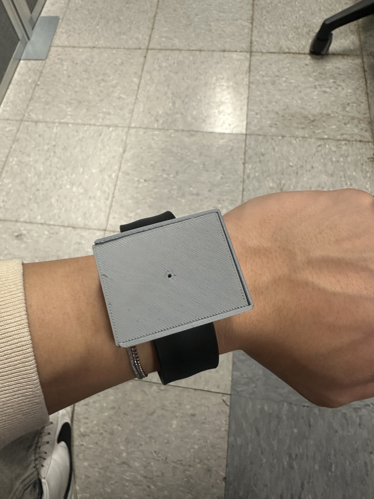
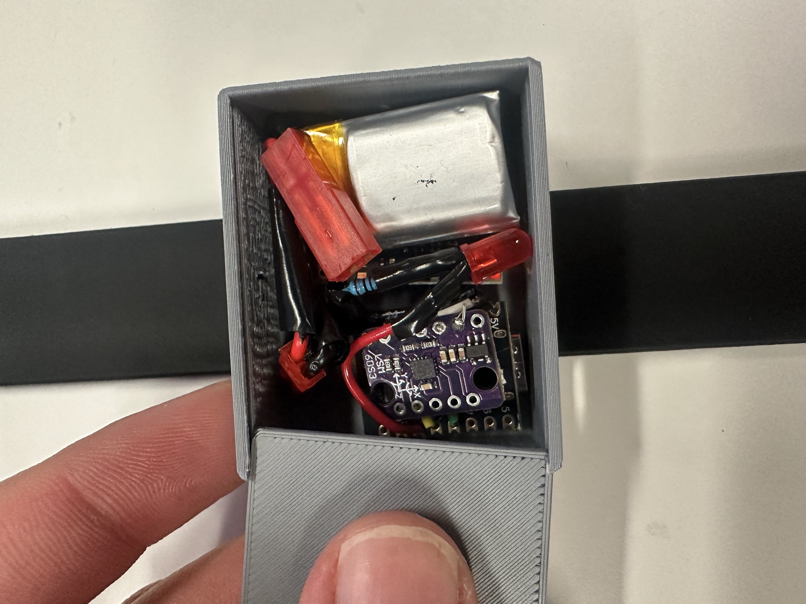
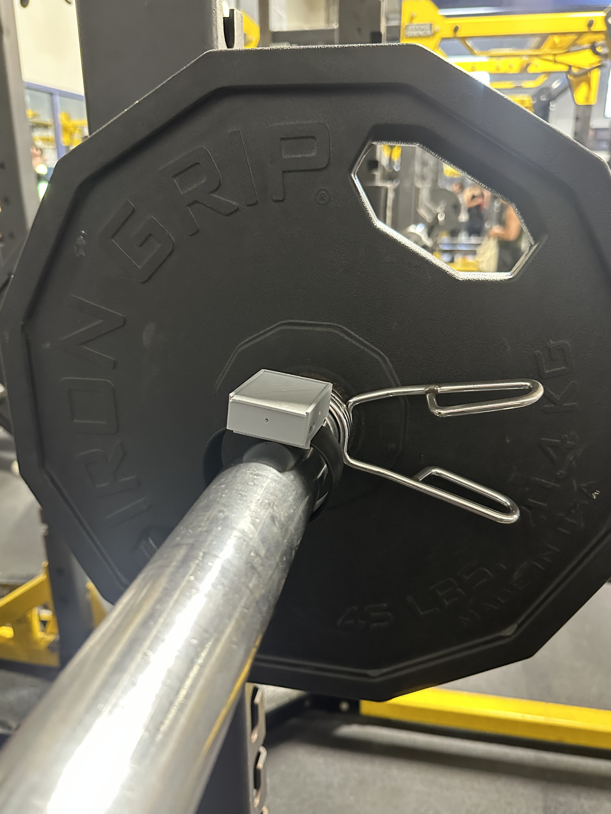

← Back to portfolio
Coach NOVA — AI Assistive Coaching System for Strength Athletes
Embedded Systems / AI / Human Performance
Coach NOVA is an AI-powered coaching system designed to provide strength athletes with
real-time feedback and post-session analysis through a non-intrusive sensing system.
By combining embedded hardware with an AI-driven interface, the system delivers actionable
insights that help athletes improve form, manage fatigue, and optimize performance over time.
Tools / Methods
ESP32-C3, IMU sensing, embedded hardware integration, battery-powered electronics,
wireless communication, signal collection, motion analysis, AI-assisted feedback,
and user-centered system design.
Overview
Coach NOVA was developed as an assistive coaching platform for strength athletes who
train without direct access to a coach. The system captures motion data during lifts
and translates it into feedback that can support immediate adjustments during training
as well as longer-term performance analysis after a session is completed.
Purpose
The goal of Coach NOVA is to replace the broken feedback loop in strength training by
providing continuous, personalized coaching. In many training environments, athletes
either receive delayed feedback or no feedback at all. This system addresses that gap
by collecting movement data in real time and converting it into clear, useful guidance.
Target Users
- Competitive and semi-competitive powerlifters
- Strength athletes training alone
- Users without consistent access to a coach
System Architecture
The system combines embedded sensing hardware with an AI-supported feedback interface.
Motion data is captured through an IMU-based device, processed through a microcontroller,
and transmitted wirelessly for interpretation and athlete-facing analysis.
Hardware Components
- ESP32-C3 Microcontroller: data processing and wireless communication
- IMU Sensor (LSM6DS3 / LSM6DSOX): captures acceleration and rotational motion
- 3.7V LiPo Battery: portable power source
- 3.3V Buck Converter: voltage regulation
- TP4056 Charging Module: battery charging support
- LED Indicator: system status feedback
Project Images

Device Assembly

Hardware Layout

Mounted on Barbell
What I worked on
- Contributed to the development of an embedded sensing system for athlete movement tracking.
- Integrated hardware components including the microcontroller, IMU, power system, and communication setup.
- Helped define how sensor data could be translated into useful real-time and post-session feedback.
- Worked on a system intended to improve the training feedback loop through accessible AI-assisted coaching.
Key Engineering Challenges
- Capturing meaningful movement data using a non-intrusive, athlete-friendly sensing setup.
- Balancing portability, power management, and reliable wireless communication.
- Converting raw motion data into feedback that is actionable and easy for athletes to interpret.
What I learned
- How embedded sensing hardware can be combined with software and AI to create practical user-facing systems.
- How to think about system design from both the technical and end-user experience perspectives.
- How motion data collection, processing, and interpretation can support real-time human performance applications.